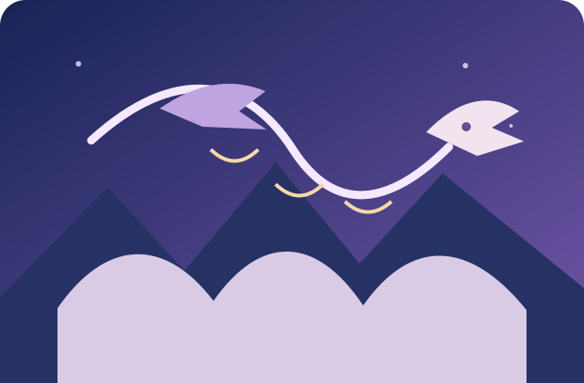
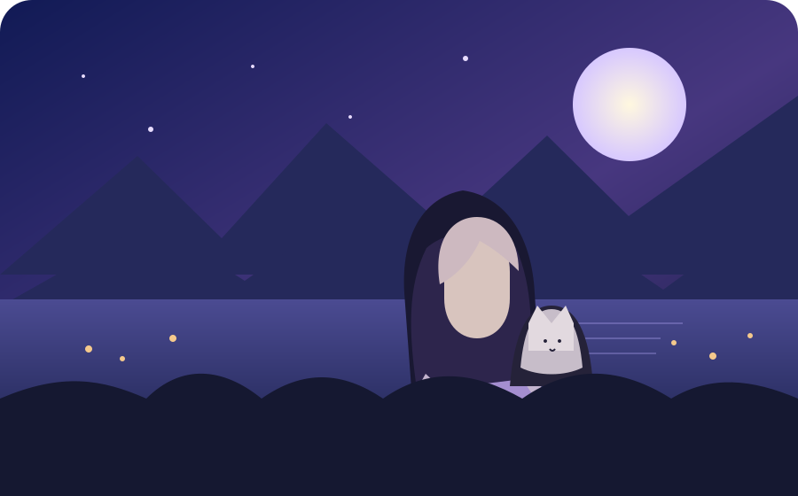
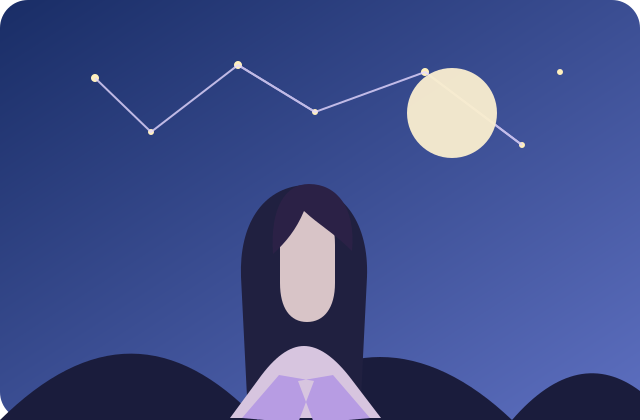
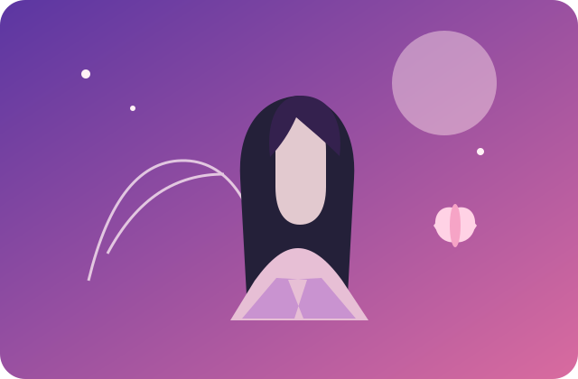
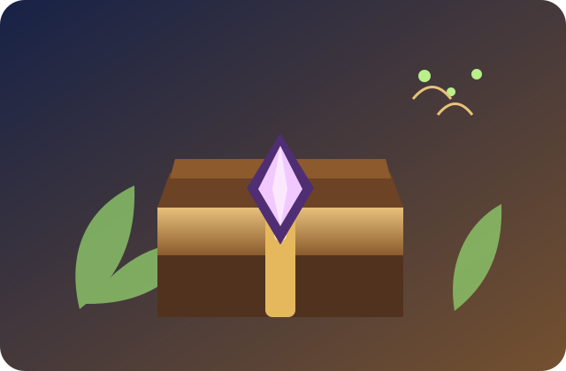

띠 운세12가지 띠로 보는 오늘의 흐름
띠 운세와 별자리 운세부터 나의 성향을 알아보는 심리테스트, 하루의 작은 행운을 더해줄 아이템까지 한곳에서 확인해보세요.





작은 선택이 모여 특별한 하루를 만듭니다.
짧게 답하고 지금의 나를 확인해보세요.
오늘의 흐름을 확인할 띠를 선택하세요.
오늘의 흐름을 확인할 별자리를 선택하세요.
지금의 나에게 가장 가까운 답을 골라보세요. 결과는 가볍게 참고하는 용도로 즐겨주세요.